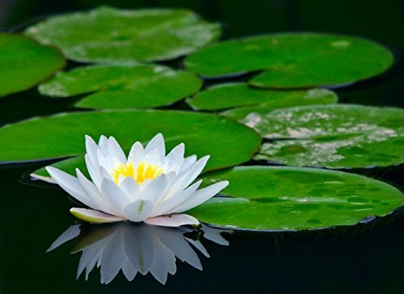
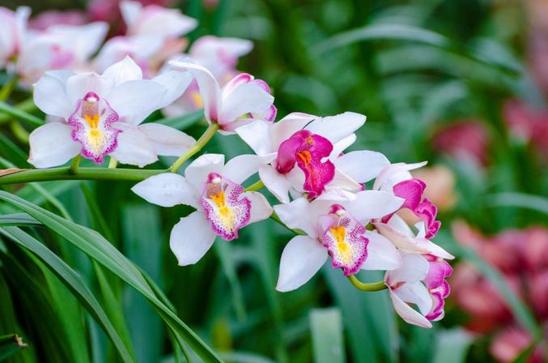

Narcissus is a genus of predominantly spring flowering perennial plants of the amaryllis family, Amaryllidaceae.
Various common names including daffodil, narcissus and jonquil are used to describe all or some members of the genus.

Nelumbo nucifera:
Nelumbo nucifera, also known as Indian lotus, sacred lotus, or simply lotus, is one of two extant species of aquatic
plant in the family Nelumbonaceae. It is sometimes colloquially called a water lily, though this more often refers to members of the family Nymphaeaceae.
Buttercup:
Ranunculus is a large genus of about 600 species of flowering plants in the family Ranunculaceae.
Members of the genus are known as buttercups, spearworts and water crowfoots.
Lilly:
Lilium is a genus of herbaceous flowering plants growing from bulbs, all with large prominent flowers.
Lilies are a group of flowering plants which are important in culture and literature in much of the world.
Sunflowers:
Helianthus is a genus comprising about 70 species of annual and perennial flowering plants in the daisy family Asteraceae.
Except for three South American species, the species of Helianthus are native to North America and Central America.
Calendula:
Calendula is a genus of about 15–20 species of annual and perennial herbaceous plants in the daisy family Asteraceae that
are often known as marigolds. They are native to southwestern Asia, western Europe, Macaronesia, and the Mediterranean.
Jasmine:
Jasmine is a genus of shrubs and vines in the olive family. It contains around 200 species native to tropical and
warm temperate regions of Eurasia and Oceania. Jasmines are widely cultivated for the characteristic fragrance of their flowers.
Black rose:
Black roses are symbols featured in fiction with many different meanings and titles such as black velvet rose, black magic,
barkarole, black beauty, Tuscany superb, black jade, and baccara. The roses commonly called black roses are technically a very dark shade of red, purple or maroon

Orchids:
The Orchidaceae are a diverse and widespread family of flowering plants, with blooms that are often colourful and fragrant, commonly known as the orchid family.
Along with the Asteraceae, they are one of the two largest families of flowering plants.
Daisy:
Bellis perennis, the daisy, is a common European species of the family Asteraceae, often considered the archetypal species of that name.
To distinguish this species from other "daisies" it is sometimes qualified as common daisy, lawn daisy or English daisy.
Rose:
A rose is a woody perennial flowering plant of the genus Rosa, in the family Rosaceae, or the flower it bears. There are over three hundred
species and tens of thousands of cultivars. They form a group of plants that can be erect shrubs, climbing, or trailing, with stems that are often armed with sharp prickles.
Water lilies:
Nymphaeaceae is a family of flowering plants, commonly called water lilies. They live as rhizomatous aquatic herbs in temperate and tropical climates around the world.
The family contains five genera with about 70 known species.